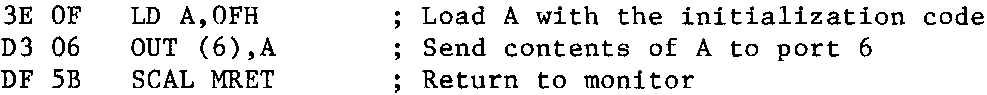

INMC 80 News |
February–April 1981 · Issue 3 |
| Page 47 of 55 |
|---|
I started out knowing nothing, but have slowly learned over a period (with a little help from articles in the newletter). The back issue articles on the PIO are a little heavy going, and being mainly concerned with the use of interrupts (vital information I’m sure … but), tend to gloss over the obvious. The obvious is how to get information into and out of a PIO in the first place. Reading and understanding the manuals is most important, but these tend to leave out important points. The manual makes it quite clear that before a port within a PIO can be used, a control word must be send to its appropriate control port to instruct the port which mode is to be used. But how to construct the control word. My PIO manual states on page 10 that the operating mode is selected as follows:
| M1 | M0 | X | X | 1 | 1 | 1 | 1 |
| D7 | D6 | D5 | D4 | D3 | D2 | D1 | D0 |
(refer to the manual for greater detail), but unless you realise the above is a bit pattern which must be converted to a HEX number then its relevance is unknown. For example, to select the output mode, M1 and M0 are both 0, and X may be anything, for convenience, 0, therefore
0 0 X X 1 1 1 1 = 0F
(For more detail on converting bits to HEX refer to the Kiddies Guide part 1, INMC80-1.) So to initialize port 4 of the PIO to output use the following piece of code, which must be sent to the port 4 control port, port 6:
The PIO port is now initialized to output until another control word changes it. Note that HALT could have been used instead of a return to monitor, but this would have required RESET to start the processor again, and Nascom 2’s reset the PIO when RESET is pressed. HALT would be quite satisfactory with Nascom 1. Having set the PIO to output, the ‘0’ command may be used to test its affect on port 4.
use Q 4 to see if the PIO registers echo the data sent.
Having mastered sending data to the PIO, it is easy to grasp the opposite, inputting data. First send the appropriate control word, to initialize the port to input, from then on the PIO will be set to receive data until the control word is changed (or the PIO reset). One minor complication, and that is the input to the port is latched, and the latches are opened by the STB input going low. This is used to cause an interrupt if the interrupt mode is selected. But in the simple case, no interrupts are required, and data may be sampled at any time, so the input latches are not required. The latches may be ‘opened’ permanently if the STB input is tied to 0V.
Fine, what next? Martin Dyer helps here with his suggestion in INMC80-1, let the Nascom produce music. Here is my answer. For this we need a D to A convertor, I bought an integrated circuit from Radio Spares (they get ‘up-tight’ if you call ‘em that these days, they prefer RS Components. Ed.) to achieve this, part 309-458. The circuit is shown on the attached circuit diagram, along with another IC from RS, namely a voltage controlled oscillator, part 307-070. (The circuit also shows an unmarked op-amp which from the pinout we presume is an LM741. Ed.)
Using a small bit of machine code, and an amplifier attached to the VCO, we can program notes. The program initializes the PIO to output, then scans the keyboard for a character. When a key is pressed, the character is sent to the port, changing the analogue voltage produced by the D to A convertor, which in turn changes the frequency of the VCO. The character pressed is sent to the screen for reference.
| Page 47 of 55 |
|---|